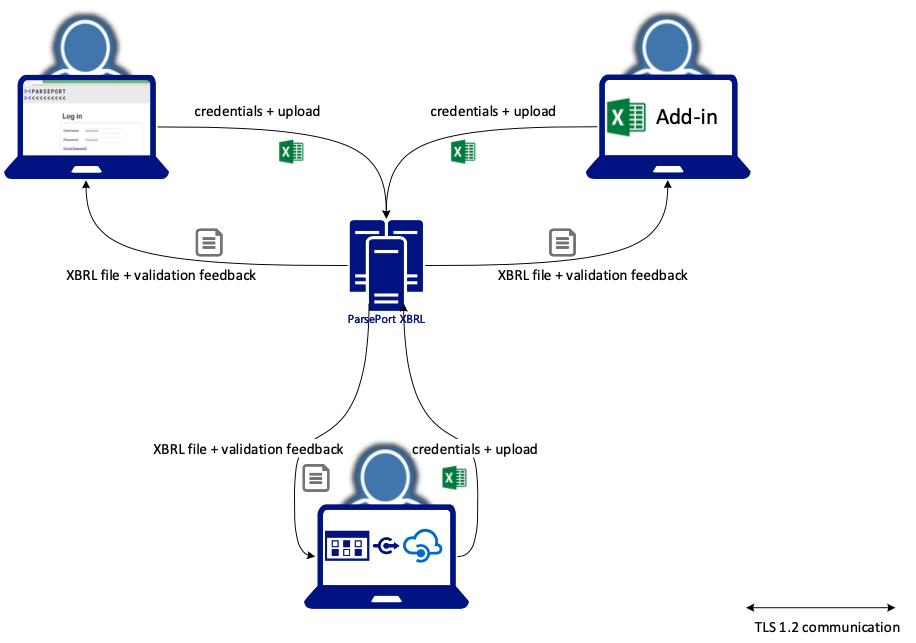

Data handling
A typical data flow for the ParsePort XBRL service has the following four steps:
- Upload your data to ParsePort (TLS 1.2)
- Use your credentials or token (SAML 2.0)
- Data is placed in memory
- ParsePort extract and convert data from your upload
- The conversion starts, time to live for a conversion is maximum 2 hours
- You can download the report from ParsePort (TLS 1.2)
- You have
15 minutesto download the report after the conversion is completed
- You have
- ParsePort cleans up and delete all data from memory
The four steps can be visualized like the following:

Time to live in memory
All data handled by ParsePort will live for 15 minutes after processing. If there is a need for having certain data available for longer than 15 minutes, e.g. if you use our collaborated space, you can postpone the deletion with 15 minutes,until you have finished your tasks.
What data are stored when using ParsePort solutions
When uploading data to ParsePort all data handling are done in memory, and no physical files are stored at the servers. What is saved, is an id, userId for whom started the process and the logs for the processing of your data. The id and userId can be used for retrieve logs, in case an error happens, and we need to contact you, to solve the issue. When signing up for ParsePort services, you have to provide Name, Address, E-mail, Phone and Billing information. The privacy policies for ParsePort is available here: https://parseport.com/cookies-and-privacy-policy/